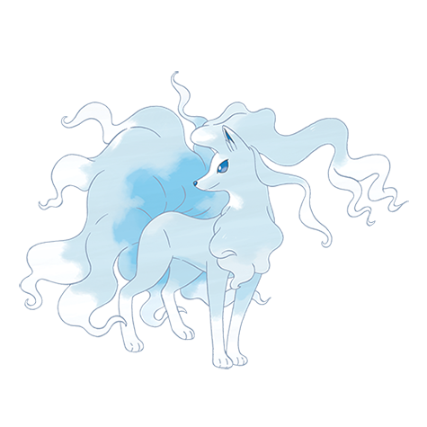
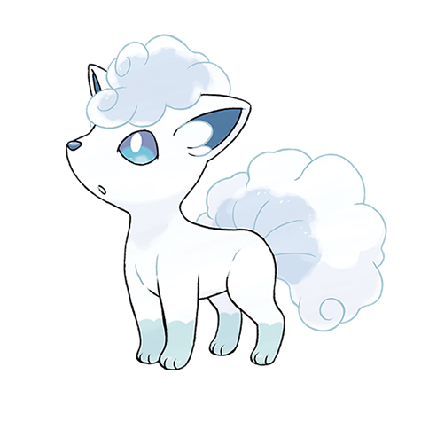

Ninetales de Alola

Tipo:
hielo
hada
Descripción:
De temperamento tranquilo. Hasta que se supo que era la forma regional de Ninetales, se lo veneraba como la encarnación de una deidad.
EVOLUCIONES

Vulpix de Alola
Volver al inicio